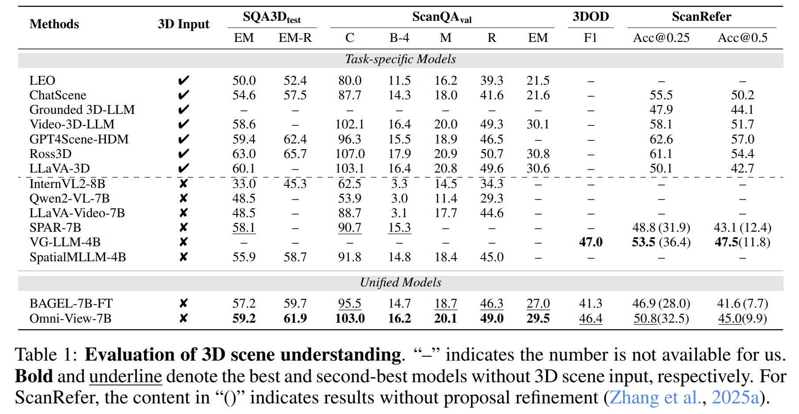
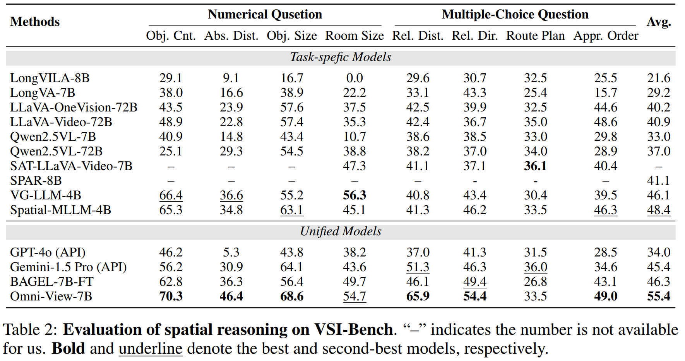

This paper presents Omni-View, which extends the unified multimodal understanding and generation to 3D scenes based on multiview images, exploring the principle that ``generation facilitates understanding". Consisting of understanding model, texture module, and geometry module, Omni-View jointly models scene understanding, novel view synthesis, and geometry estimation, enabling synergistic interaction between 3D scene understanding and generation tasks. By design, it leverages the spatiotemporal modeling capabilities of its texture module responsible for appearance synthesis, alongside the explicit geometric constraints provided by its dedicated geometry module, thereby enriching the model’s holistic understanding of 3D scenes. Trained with a two-stage strategy, Omni-View achieves a state-of-the-art score of 55.4 on the VSI-Bench benchmark, outperforming existing specialized 3D understanding models, while simultaneously delivering strong performance in both novel view synthesis and 3D scene generation.
Building upon Bagel, Omni-View consists of an understanding model and a generation model. The generation model is further composed of two specialized modules: one for texture and one for geometry. Trained via a two-stage process, Omni-View shows high effectiveness in scene understanding and novel view synthesis. Crucially, it unlocks the benefits of its generative capabilities to enhance the model's understanding performance.
(1) Our Omni-View exceeds all current MLLM methods that do not depend on 3D scene input.
(2) This performance improvement is mainly attributed to the architectural design and training scheme that we proposed.
(3) The efficacy of our approach in the QA task is equivalent to advanced MLLM methods that require 3D scene input.

The results on spatial reasoning tasks more fully demonstrate Omni-View's improvement over previous methods in analyzing the relative or absolute position and orientation of spatial objects.
